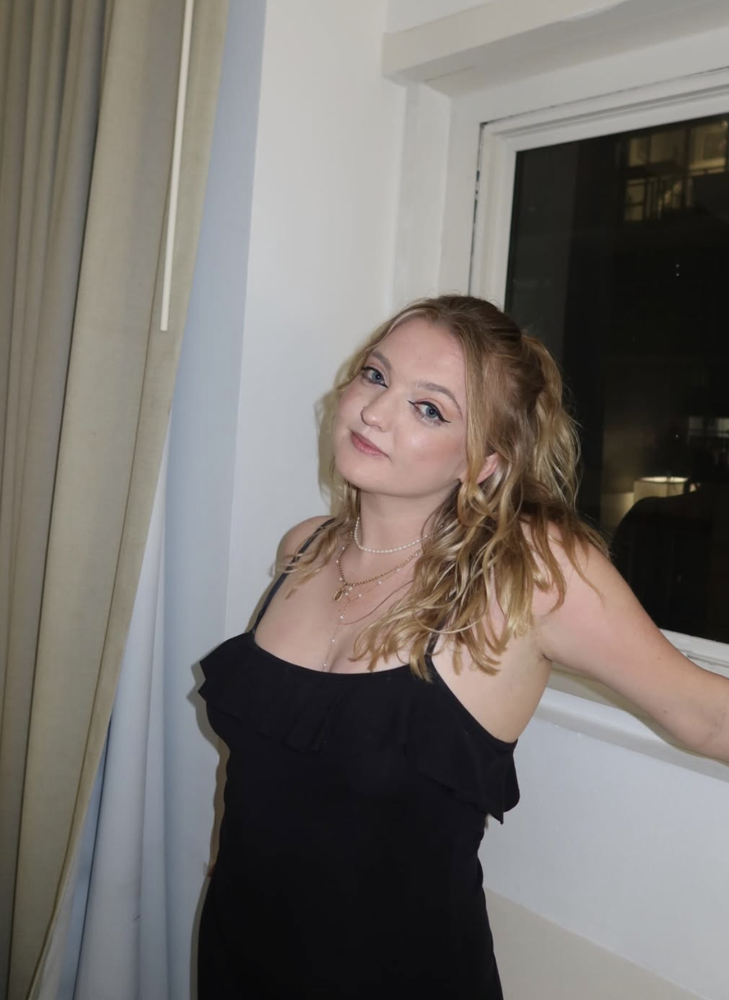
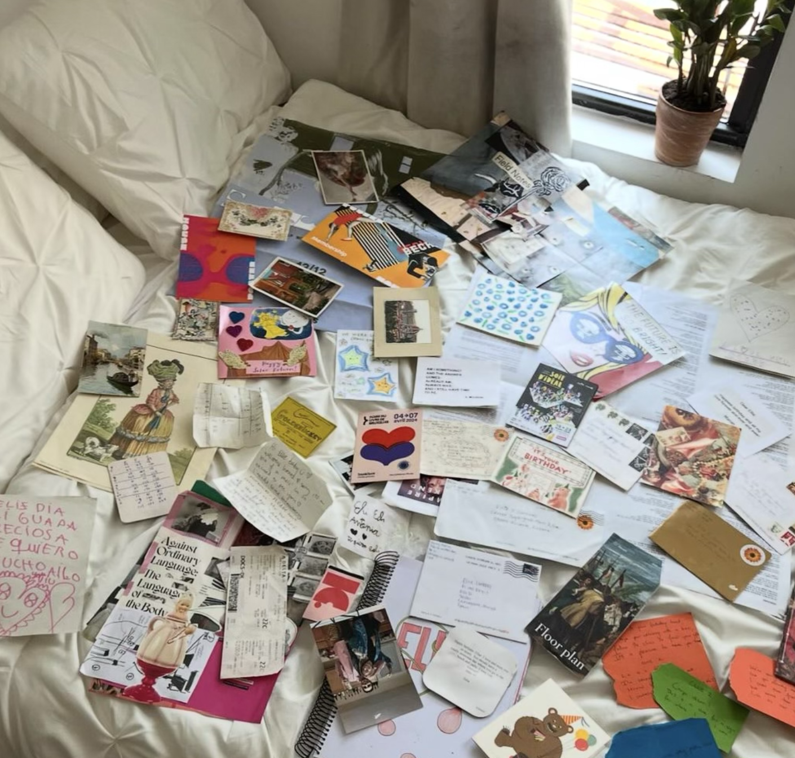
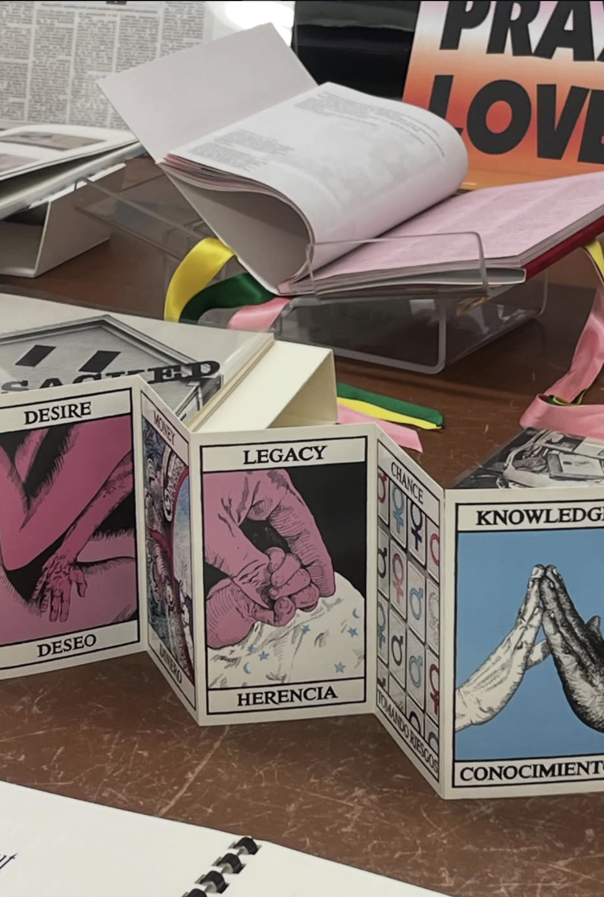
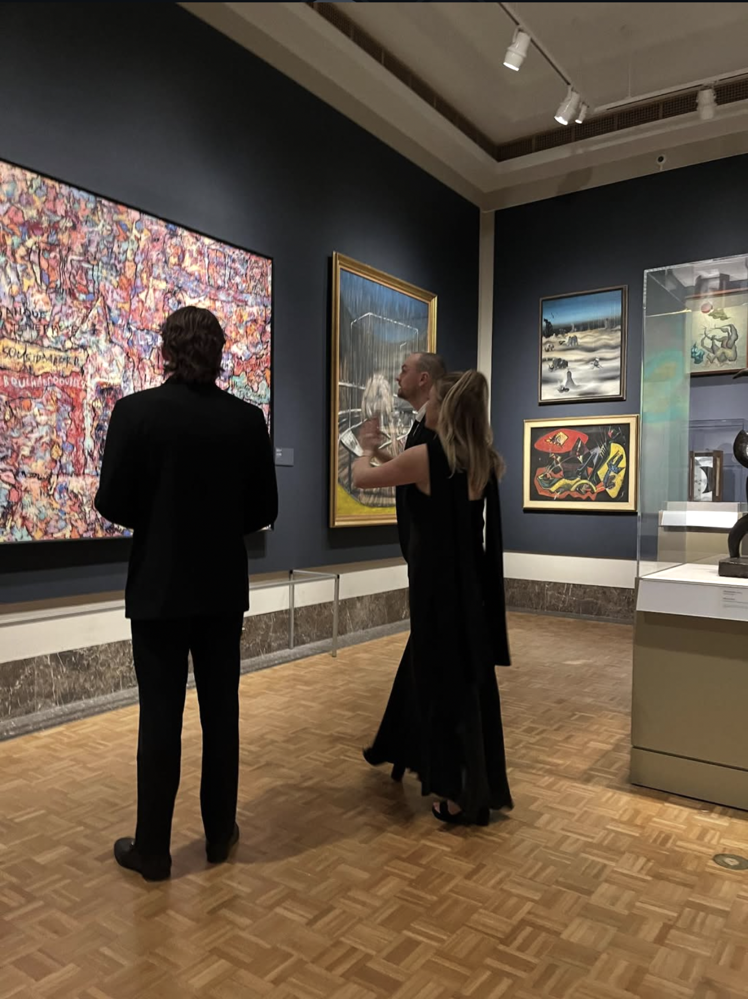

ellie connors
is a librarian, researcher, and artist.
about
,
projects
reassessing the art reference collection
the normalization of unease
cult, camp, & coming of age
machine divinity
odd collage
,
art
,
reading
,
cv
.
ellie
connors




librarian, researcher, artist, humanist.
ellie
connors
librarian, researcher, artist, humanist.